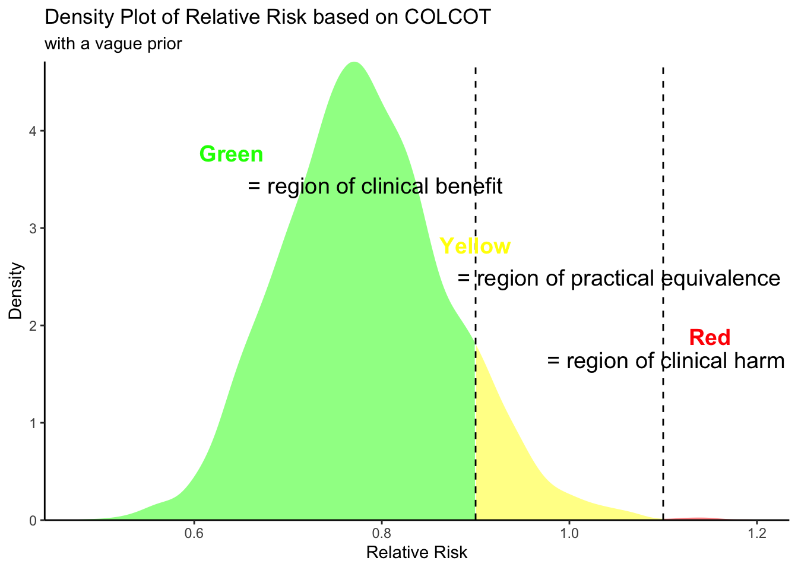

Show the code
library(tidyverse)
library(magrittr)
library(cmdstanr)
library(bayesplot)
library(lme4)In the CLEAR OASIS 9 trial acute MI patients were randomized to colchicine (n = 3,528) or placebo (n = 3,534) right after percutaneous coronary intervention (PCI).
The primary outcome of major adverse CV events (MACE), composite of CV death, MI, stroke, or ischemia-driven revascularization, for colchicine vs. placebo at 5 years, was: 9.1% vs. 9.3%, hazard ratio (HR) 0.99 (95% confidence interval [CI] 0.85-1.16), p = 0.93.
Secondary outcomes for colchicine vs. placebo at 5 years:
CV death: 3.3% vs. 3.2%, HR 1.03 (95% CI 0.80-1.34)
All-cause death: 4.6% vs. 5.1%, HR 0.90 (95% CI 0.73-1.12)
MI: 2.9% vs. 3.1%, HR 0.88 (95% CI 0.66-1.17)
Ischemia-driven revascularization: 4.6% vs. 4.7%, HR 1.01 (95% CI 0.81-1.17)
LSM C-reactive protein (CRP) levels at 3 months: 3.0 vs. 4.3 mg/dL, p < 0.001
library(tidyverse)
library(magrittr)
library(cmdstanr)
library(bayesplot)
library(lme4)There was an interesting quote from the principal investigator (PI) who said that before this study ““I was a believer in colchicine” but not a believer after the study. This dichotomization of beliefs is very common among physicians, perhaps influenced by the null hypothesis significance testing paradigm and the almighty p value that remain the cornerstone of most medical research.
Let’s take a look at this from a probabilistic viewpoint.
The PI stated before his trial was completed he was a “believer”, then what was his evidence to support this belief. Perhaps his belief was founded on the on the results from the COLCOT study where patients were randomized to the same dose of colchicine (n=2366) or placebo (n=2379) a mean of 13.5 days after their acute MI. The primary efficacy end point was a composite of death from cardiovascular causes, resuscitated cardiac arrest, myocardial infarction, stroke, or urgent hospitalization for angina leading to coronary revascularization. The primary end point occurred in 5.5% of the patients in the colchicine group, as compared with 7.1% of those in the placebo group (hazard ratio, 0.77; 95% confidence interval [CI], 0.61 to 0.96; P=0.02).
Presumably others didn’t quite share his belief or the necessary equipoise would not have been present to proceed with the CLEAR OASIS 9 trial.
A presentation of these results from a probabilistic viewpoint may help understand these discrepancies.
Lets’ first write some Stan code for a two arm binomial trial with vague priors
# stan code for 2 arm binomial
stancode <- '
data {
int<lower=0> n1; // Total number of trials in the placebo arm
int<lower=0> y1; // Number of successes in the placebo arm
int<lower=0> n2; // Total number of trials in the intervention arm
int<lower=0> y2; // Number of successes in the intervention arm
}
parameters {
real<lower=0, upper=1> p1; // Probability of success in the placebo arm
real<lower=0, upper=1> p2; // Probability of success in the intervention arm
}
model {
p1 ~ beta(1, 1); // Default prior for p1
p2 ~ beta(1, 1); // Default prior for p2
y1 ~ binomial(n1, p1); // Likelihood for the placebo arm
y2 ~ binomial(n2, p2); // Likelihood for the intervention arm
}
generated quantities {
real rr = p2 / p1; // Relative Risk of intervention arm over placebo arm
}
'
writeLines(stancode, "binom_2.stan")
# check file exists
# file.exists("binom_2.stan")
# cat(readLines("binom_2.stan"), sep = "\n")Now will execute this program with the COLCOT data in order to fully appreciate the entire posterior probability distribution as opposed to be a limted fixed viewpoint of an uninteresting null hypothesis as is the conventional statistical approach.
# Data for the COLCOT model
data_list <- list(
n2 = 2366,
y2 = as.integer(2366 * 0.055),
n1 = 2379,
y1 = as.integer(2379 * 0.071)
)
# Compile and fit the model
mod <- cmdstan_model("binom_2.stan")
fit <- mod$sample(data = data_list, chains = 4, parallel_chains = 4, refresh = 0, seed = 123)Running MCMC with 4 parallel chains...
Chain 1 finished in 0.0 seconds.
Chain 2 finished in 0.0 seconds.
Chain 3 finished in 0.0 seconds.
Chain 4 finished in 0.0 seconds.
All 4 chains finished successfully.
Mean chain execution time: 0.0 seconds.
Total execution time: 0.2 seconds.# Extracting posterior samples
posterior_samples <- fit$draws()
# Plotting
color_scheme_set("blue")
# mcmc_trace(posterior_samples, pars = c("p1", "p2", "rr"), nrow = 3)
# Plot relative risk distributions with no formatting
# mcmc_areas(posterior_samples, pars = "rr", prob = 0.95)
# print summary
fit$summary()# A tibble: 4 × 10
variable mean median sd mad q5 q95 rhat ess_bulk
<chr> <dbl> <dbl> <dbl> <dbl> <dbl> <dbl> <dbl> <dbl>
1 lp__ -1117. -1.12e+3 1.06 0.756 -1.12e+3 -1.12e+3 1.00 1725.
2 p1 0.0712 7.10e-2 0.00539 0.00544 6.25e-2 8.05e-2 1.00 3654.
3 p2 0.0553 5.52e-2 0.00480 0.00465 4.73e-2 6.34e-2 1.00 2972.
4 rr 0.782 7.79e-1 0.0923 0.0894 6.35e-1 9.40e-1 1.00 3200.
# ℹ 1 more variable: ess_tail <dbl># Correct extraction of relative risk samples
rr_samples <- fit$draws(variables = "rr")
rr_vector <- as.vector(rr_samples) # Convert to a simple vector for easier handling
# Calculating probabilities
prob_rr_less_09 <- mean(rr_vector < 0.9)
prob_rr_between_09_11 <- mean(rr_vector >= 0.9 & rr_vector <= 1.1)
prob_rr_greater_11 <- mean(rr_vector > 1.1)
prob_rr_less_08 <- mean(rr_vector < 0.8)
prob_rr_less_10 <- mean(rr_vector < 1.0)
# Print the probabilities
cat("Probability RR < 1.0 (P (statistical signifiance)): ", prob_rr_less_10,
"\nProbability RR < 0.8: ", prob_rr_less_08,
"\nProbability RR < 0.9: ", prob_rr_less_09,
"\nProbability RR 0.9 to 1.1: ", prob_rr_between_09_11,
"\nProbability RR > 1.1: ", prob_rr_greater_11, "\n")Probability RR < 1.0 (P (statistical signifiance)): 0.985
Probability RR < 0.8: 0.59825
Probability RR < 0.9: 0.89425
Probability RR 0.9 to 1.1: 0.10475
Probability RR > 1.1: 0.001 This may also be appreciated graphically
# Assuming rr_vector is already defined
d <- density(rr_vector)
density_df <- data.frame(x = d$x, y = d$y)
# Assign categories based on the x values
density_df$category <- ifelse(density_df$x < 0.9, "benefit",
ifelse(density_df$x <= 1.1, "equivalence", "harm"))
p <- ggplot(density_df, aes(x = x, y = y)) +
geom_area(data = subset(density_df, category == "benefit"), fill = "green", alpha = 0.5) +
geom_area(data = subset(density_df, category == "equivalence"), fill = "yellow", alpha = 0.5) +
geom_area(data = subset(density_df, category == "harm"), fill = "red", alpha = 0.5) +
geom_vline(xintercept = 0.9, linetype = "dashed", color = "black") +
geom_vline(xintercept = 1.1, linetype = "dashed", color = "black") +
labs(title="Density Plot of Relative Risk based on COLCOT",
subtitle = "with a vague prior") +
theme_classic() +
scale_x_continuous(expand = c(0, 0)) + # No expansion on x-axis
scale_y_continuous(expand = c(0, 0)) + # No expansion on y-axis
xlab("Relative Risk") +
ylab("Density")
p <- p +
annotate("text", x = 0.64, y = max(density_df$y, na.rm = TRUE) * 0.8, label = "Green", color = "green", size = 5, fontface = "bold") +
annotate("text", x = 0.79, y = max(density_df$y, na.rm = TRUE) * 0.73, label = " = region of clinical benefit", color = "black", size = 5) +
annotate("text", x = 0.9, y = max(density_df$y, na.rm = TRUE) * 0.6, label = "Yellow", color = "yellow", size = 5, fontface = "bold") +
annotate("text", x = 1.05, y = max(density_df$y, na.rm = TRUE) * 0.53, label = " = region of practical equivalence", color = "black", size = 5) +
annotate("text", x = 1.15, y = max(density_df$y, na.rm = TRUE) * 0.4, label = "Red", color = "red", size = 5, fontface = "bold") +
annotate("text", x = 1.10, y = max(density_df$y, na.rm = TRUE) * 0.35, label = " = region of clinical harm", color = "black", size = 5)
p
This figure explains why there may be different beliefs about the colchicine effect with some being enthusiastic about a 90% probability of a clinical benefit (assuming a 10% reduction in RR is an appropriate clinical threshold). Conversely others may be more conservative and want a larger reduction in RR, given the inconvenience and costs of taking another medication. The probability of an at least 20% reduction is only 60% underscoring the need for some to await further studies to better define any clinical benefits.
For the current CLEAR OASIS results, initially let’s assume a vague priors so that the posterior probability distribution is completely dominated by the current data. We will estimate the probabilities for each arm and their relative risk (RR). From the RR posterior probability density one can further calculate probabilities for various cutpoints. For example, one might assume that we are particularly interested in probabilities that exceed a clinically meaningful benefit or harm. These cutpoints can be individually chosen but let’s again assume a benefit threshold of RR < 0.9 and harm threshold of RR > 1.1.
library(cmdstanr)
library(bayesplot)
# Data for the model
data_list <- list(
n2 = 3528,
y2 = as.integer(3528 * 0.091),
n1 = 3534,
y1 = as.integer(3534 * 0.093)
)
# Compile and fit the model
mod <- cmdstan_model("binom_2.stan")
fit <- mod$sample(data = data_list, chains = 4, parallel_chains = 4, refresh = 0, seed = 123)Running MCMC with 4 parallel chains...
Chain 1 finished in 0.0 seconds.
Chain 2 finished in 0.0 seconds.
Chain 3 finished in 0.0 seconds.
Chain 4 finished in 0.0 seconds.
All 4 chains finished successfully.
Mean chain execution time: 0.0 seconds.
Total execution time: 0.2 seconds.# Extracting posterior samples
posterior_samples <- fit$draws()
# Plotting
color_scheme_set("blue")
mcmc_trace(posterior_samples, pars = c("p1", "p2", "rr"), nrow = 3)
# Plot relative risk distributions with no formatting
# mcmc_areas(posterior_samples, pars = "rr", prob = 0.95)
# print summary
fit$summary()# A tibble: 4 × 10
variable mean median sd mad q5 q95 rhat ess_bulk
<chr> <dbl> <dbl> <dbl> <dbl> <dbl> <dbl> <dbl> <dbl>
1 lp__ -2173. -2.17e+3 0.998 0.719 -2.18e+3 -2.17e+3 1.00 1715.
2 p1 0.0931 9.29e-2 0.00487 0.00494 8.52e-2 1.01e-1 1.00 3788.
3 p2 0.0914 9.13e-2 0.00488 0.00484 8.36e-2 9.95e-2 1.00 2400.
4 rr 0.985 9.82e-1 0.0734 0.0729 8.67e-1 1.11e+0 1.00 2532.
# ℹ 1 more variable: ess_tail <dbl># Correct extraction of relative risk samples
rr_samples <- fit$draws(variables = "rr")
rr_vector <- as.vector(rr_samples) # Convert to a simple vector for easier handling
# Calculating probabilities
prob_rr_less_09 <- mean(rr_vector < 0.9)
prob_rr_between_09_11 <- mean(rr_vector >= 0.9 & rr_vector <= 1.1)
prob_rr_greater_11 <- mean(rr_vector > 1.1)
# Print the probabilities
cat("Probability RR < 0.9: ", prob_rr_less_09, "\nProbability RR 0.9 to 1.1: ", prob_rr_between_09_11, "\nProbability RR > 1.1: ", prob_rr_greater_11, "\n")Probability RR < 0.9: 0.122
Probability RR 0.9 to 1.1: 0.8125
Probability RR > 1.1: 0.0655 Understanding these results is again facilitated with graphical presentations
# Assuming rr_vector is already defined
d <- density(rr_vector)
density_df <- data.frame(x = d$x, y = d$y)
# Assign categories based on the x values
density_df$category <- ifelse(density_df$x < 0.9, "benefit",
ifelse(density_df$x <= 1.1, "equivalence", "harm"))
p <- ggplot(density_df, aes(x = x, y = y)) +
geom_area(data = subset(density_df, category == "benefit"), fill = "green", alpha = 0.5) +
geom_area(data = subset(density_df, category == "equivalence"), fill = "yellow", alpha = 0.5) +
geom_area(data = subset(density_df, category == "harm"), fill = "red", alpha = 0.5) +
geom_vline(xintercept = 0.9, linetype = "dashed", color = "black") +
geom_vline(xintercept = 1.1, linetype = "dashed", color = "black") +
labs(title="Density Plot of Relative Risk based on CLEAR OASIS",
subtitle = "with a vague prior") +
theme_classic() +
scale_x_continuous(expand = c(0, 0)) + # No expansion on x-axis
scale_y_continuous(expand = c(0, 0)) + # No expansion on y-axis
xlab("Relative Risk") +
ylab("Density")
p <- p +
annotate("text", x = 0.80, y = max(density_df$y, na.rm = TRUE) * 0.6, label = "Green", color = "green", size = 5, fontface = "bold") +
annotate("text", x = 0.89, y = max(density_df$y, na.rm = TRUE) * 0.57, label = " = region of clinical benefit", color = "black", size = 5) +
annotate("text", x = 0.8, y = max(density_df$y, na.rm = TRUE) * 0.8, label = "Yellow", color = "yellow", size = 5, fontface = "bold") +
annotate("text", x = .92, y = max(density_df$y, na.rm = TRUE) * 0.77, label = " = region of practical equivalence", color = "black", size = 5) +
annotate("text", x = 1.1, y = max(density_df$y, na.rm = TRUE) * 0.4, label = "Red", color = "red", size = 5, fontface = "bold") +
annotate("text", x = 1.19, y = max(density_df$y, na.rm = TRUE) * 0.37, label = " = region of clinical harm", color = "black", size = 5)
p
This analysis shows that there is only a small probability (12%) of a clinically significant benefit (where this has been arbitrarily defined as a minimum 10% decrease in RR). There is a 7% of clinical harm (RR >1.1) and a 81% probability of practical equivalence.
Recall that this analysis examines only the current study but the lead PI claimed he was a priori a “believer” so to be consistent with this prior belief, this posterior belief based on a vague prior should be replaced with an informative prior belief that is updated with this new data.
This infromative prior is combined with the current data following the laws of probability, i.e. a weighted average according with weights proportional to the precision of the prior and current data
# stan code for 2 arm binomial with informative prior
stancode <- '
data {
int<lower=0> n1; // Total number of trials in the placebo arm
int<lower=0> y1; // Number of successes in the placebo arm
int<lower=0> n2; // Total number of trials in the intervention arm
int<lower=0> y2; // Number of successes in the intervention arm
real<lower=0> alpha1; // Alpha for beta prior on p1
real<lower=0> beta1; // Beta for beta prior on p1
real<lower=0> alpha2; // Alpha for beta prior on p2
real<lower=0> beta2; // Beta for beta prior on p2
}
parameters {
real<lower=0, upper=1> p1; // Probability of success in the placebo arm
real<lower=0, upper=1> p2; // Probability of success in the intervention arm
}
model {
p1 ~ beta(alpha1, beta1); // Informative prior for p1 based on COLCOT
p2 ~ beta(alpha2, beta2); // Informative prior for p2 based on COLCOT
y1 ~ binomial(n1, p1); // Likelihood for the placebo arm
y2 ~ binomial(n2, p2); // Likelihood for the intervention arm
}
generated quantities {
real rr = p2 / p1; // Relative Risk of intervention arm over placebo arm
}'
writeLines(stancode, "binom_2_priorCOLCOT.stan")
# file.exists("binom_2_priorCOLCOT.stan")# prior from COLCOT
alpha1 = as.integer(2379 * 0.071)
beta1 <- 2379 - alpha1
alpha2 = as.integer(2366 * 0.055)
beta2 <- 2366 - alpha2
# Data for the model
data_list <- list(
n1 = 3534,
y1 = as.integer(3534 * 0.093),
n2 = 3528,
y2 = as.integer(3528 * 0.091),
alpha1 = alpha1,
beta1 = beta1,
alpha2 = alpha2,
beta2 = beta2
)
# Compile and fit the model
mod <- cmdstan_model("binom_2_priorCOLCOT.stan")
fit <- mod$sample(data = data_list, chains = 4, parallel_chains = 4, refresh = 0, seed = 123)Running MCMC with 4 parallel chains...
Chain 1 finished in 0.0 seconds.
Chain 2 finished in 0.0 seconds.
Chain 3 finished in 0.0 seconds.
Chain 4 finished in 0.0 seconds.
All 4 chains finished successfully.
Mean chain execution time: 0.0 seconds.
Total execution time: 0.2 seconds.# Extracting posterior samples
posterior_samples <- fit$draws()
# Plotting
color_scheme_set("blue")
mcmc_trace(posterior_samples, pars = c("p1", "p2", "rr"), nrow = 3)
# Plot relative risk distributions with no formatting
# mcmc_areas(posterior_samples, pars = "rr", prob = 0.95)
# print summary
fit$summary()# A tibble: 4 × 10
variable mean median sd mad q5 q95 rhat ess_bulk
<chr> <dbl> <dbl> <dbl> <dbl> <dbl> <dbl> <dbl> <dbl>
1 lp__ -3297. -3.30e+3 1.02 0.749 -3.30e+3 -3.30e+3 1.00 1896.
2 p1 0.0839 8.38e-2 0.00370 0.00367 7.80e-2 9.01e-2 1.00 3545.
3 p2 0.0765 7.65e-2 0.00349 0.00341 7.08e-2 8.22e-2 1.00 3455.
4 rr 0.913 9.13e-1 0.0576 0.0590 8.21e-1 1.01e+0 1.00 3283.
# ℹ 1 more variable: ess_tail <dbl># Correct extraction of relative risk samples
rr_samples <- fit$draws(variables = "rr")
rr_vector <- as.vector(rr_samples) # Convert to a simple vector for easier handling
# Calculating probabilities
prob_rr_less_09 <- mean(rr_vector < 0.9)
prob_rr_between_09_11 <- mean(rr_vector >= 0.9 & rr_vector <= 1.1)
prob_rr_greater_11 <- mean(rr_vector > 1.1)
# Print the probabilities
cat("Probability RR < 0.9: ", prob_rr_less_09, "\nProbability RR 0.9 to 1.1: ", prob_rr_between_09_11, "\nProbability RR > 1.1: ", prob_rr_greater_11, "\n")Probability RR < 0.9: 0.41925
Probability RR 0.9 to 1.1: 0.5795
Probability RR > 1.1: 0.00125 Understanding these results is facilitated with graphical presentations
# Assuming rr_vector is already defined
d <- density(rr_vector)
density_df <- data.frame(x = d$x, y = d$y)
# Assign categories based on the x values
density_df$category <- ifelse(density_df$x < 0.9, "benefit",
ifelse(density_df$x <= 1.1, "equivalence", "harm"))
p <- ggplot(density_df, aes(x = x, y = y)) +
geom_area(data = subset(density_df, category == "benefit"), fill = "green", alpha = 0.5) +
geom_area(data = subset(density_df, category == "equivalence"), fill = "yellow", alpha = 0.5) +
geom_area(data = subset(density_df, category == "harm"), fill = "red", alpha = 0.5) +
geom_vline(xintercept = 0.9, linetype = "dashed", color = "black") +
geom_vline(xintercept = 1.1, linetype = "dashed", color = "black") +
labs(title="Density Plot of Relative Risk based on CLEAR OASIS",
subtitle = "with an informative (COLCOT) prior") +
theme_classic() +
scale_x_continuous(expand = c(0, 0)) + # No expansion on x-axis
scale_y_continuous(expand = c(0, 0)) + # No expansion on y-axis
xlab("Relative Risk") +
ylab("Density")
p <- p +
annotate("text", x = 0.80, y = max(density_df$y, na.rm = TRUE) * 0.6, label = "Green", color = "green", size = 5, fontface = "bold") +
annotate("text", x = 0.86, y = max(density_df$y, na.rm = TRUE) * 0.56, label = " = region of clinical benefit", color = "black", size = 5) +
annotate("text", x = 0.8, y = max(density_df$y, na.rm = TRUE) * 0.8, label = "Yellow", color = "yellow", size = 5, fontface = "bold") +
annotate("text", x = .90, y = max(density_df$y, na.rm = TRUE) * 0.76, label = " = region of practical equivalence", color = "black", size = 5) +
annotate("text", x = 1.00, y = max(density_df$y, na.rm = TRUE) * 0.4, label = "Red", color = "red", size = 5, fontface = "bold") +
annotate("text", x = 1.07, y = max(density_df$y, na.rm = TRUE) * 0.33, label = " = region of clinical harm", color = "black", size = 5)
p
The PI who was a “believer” prior to his study now claims after the study to be a non-believer (to the extent that he apparently stopped the medication that was previously prescribed to his father). Yet based on his positive prior beliefs (if these can be approximated by the COLCOT RCT positive result) there is a suggestion that there remains a 42% probability of a clinically meaningful decrease in CV risk with colchicine, a 58% probability of clinical equivalence with placebo and no probability of increased cardiovascular outcomes.
Many clinicians do seem overly influenced by the last trial, particularly if they were intimately involved in it.
This of course does not imply that I would prescribe colchicine for this condition as any decision should also consider cost, other side effects, and patient preferences incuding there personalized choices about what represents a clinically meaningful thresholds.
For the current PI to now be a disbeliever, perhaps his cutpoint for efficacy was RR < 0.80 and indeed this posterior probability is indeed very small. However this would imply that his prior efficacy belief based on COLCOT should also be based on the a probability of RR < 0.80 which was only 60%. This seems a fairly modest probability to have been a strong “believer” in this therapy before the current study. The reconciliation of these different beliefs is somewhat difficult.
My main point is dichotomizing beliefs is about as useful as the dichotomization of p values according to < or > 0.05,
IOW not very useful at all..
Bayesian reasoning can help avoid the cognitive difficulties that are often present in interpreting recent RCTs, especially in the context of previous knowledge.